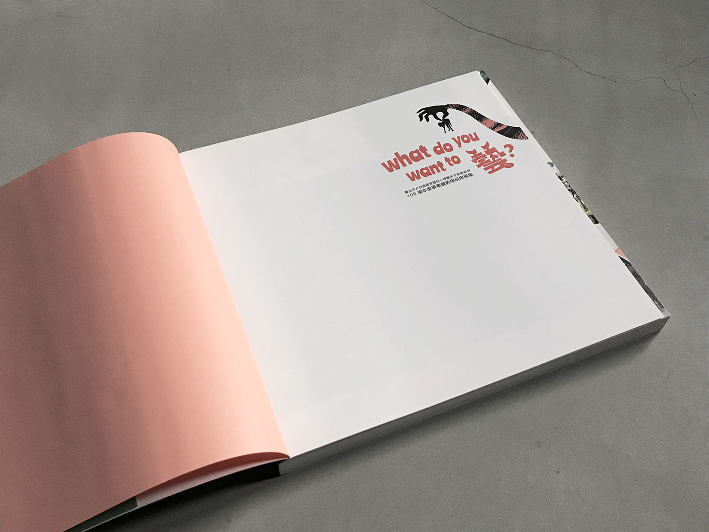
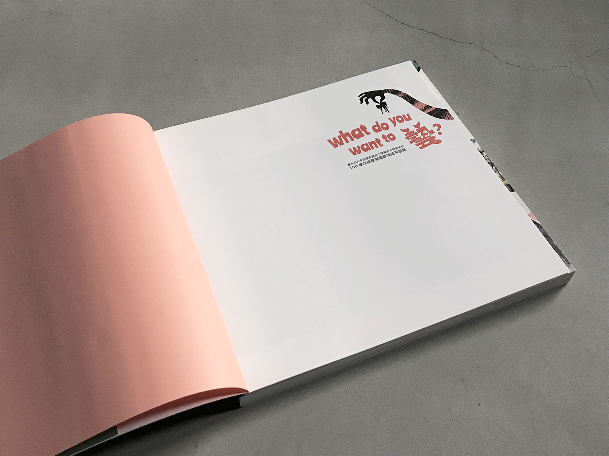

Promotional meterials for the 2020 exhibition "Art Devourer". Featuring graduates from Jiang An Elementary School.
I was inspired by the elementary school students’ drawings of various kinds of monsters and came out with my own monster based on their original drawings. I imagine the monster ate the students’ artwork and what it ate become the pattern on the monster’s skin. The monster is eager for eating the talented students and take away their colorful/creative power. The client first wanted me to put more emphasis on the pictures of the students, but I push along my idea and keep them greyscale, bringing out a nice contrast of the visual expression and also adding another layer of its meaning.
 
